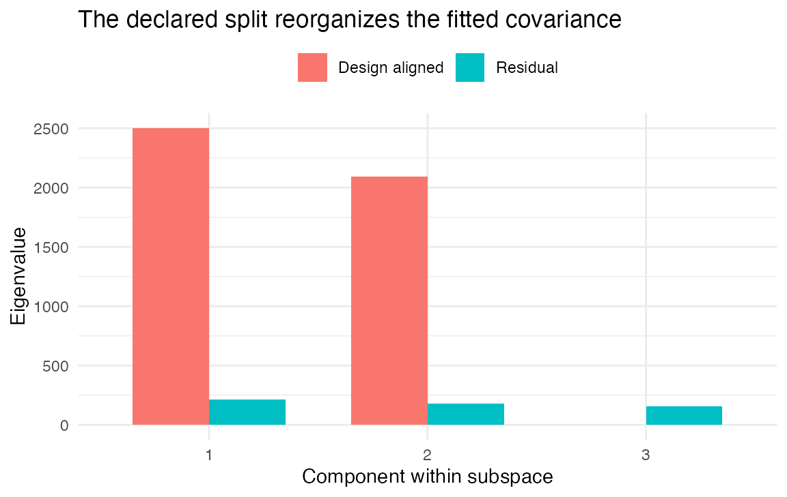

Use CPCA filtering when you have already decided that one prespecified span of effects should be studied separately from its complement. A common example is to ask for components aligned with main effects while keeping interaction and control directions in a residual subspace. Without that split, the leading DKGE component may mix all of them simply because they covary strongly.
CPCA does not discover which scientific partition is correct. You supply the partition; DKGE projects the compressed moment into design-aligned and residual parts before fitting their bases. The two parts are -orthogonal, which is a geometric statement, not evidence that the underlying cognitive processes are independent.
mixed compressed moment -> declared effect span + K-orthogonal complement -> separate latent basesThis page first shows the default mixed fit, then applies one transparent split and visualizes what moved. Custom bases, kernel sensitivity, and ridge stabilization follow as advanced branches.
When is the split scientifically useful?
Use CPCA filtering when a design carries several kinds of task effect you want analysed separately. It focuses the latent space on one effect type and separates the rest, instead of fitting all effects together.
Common reasons to declare a split include:
Factorial designs: separate main effects from interactions, so a component that combines factors cannot be mistaken for one that does not.
Experimental versus control conditions: focus on the manipulation while factoring out baseline structure.
Multi-domain studies: separate cognitive processes measured in the same experiment.
Planned versus exploratory contrasts: isolate prespecified hypotheses from secondary analyses.
Comparative studies: Apply the same declared effect spans across datasets, which makes the fitted targets easier to compare. Reliability still has to be measured rather than inferred from the decomposition.
Where does filtering enter the fit?
The compressed covariance mixes variance from every experimental effect. CPCA splits that total into subcomponents before the eigendecomposition, preserving the K-metric algebra at each step.
dkge_projector_K() builds a projector onto the named
effect subspace in the
metric, so the split respects the effect similarities the kernel
encodes. dkge_cpca_split_chat() applies that projector,
separating the compressed covariance into design and residual parts.
DKGE then fits a basis for each requested part,
-orthogonal
to the other so the two can be read together.
Name the design-aligned subspace with cpca_blocks, or
supply an explicit basis matrix with cpca_T.
cpca_part selects what comes back ("design",
"resid", or "both"), and
cpca_ridge adds diagonal regularisation when the filtered
covariance is near-singular.
Simulated Experiment: Attention-Working Memory Study
We simulate a factorial attention-working memory experiment: two main effects (attention cue validity and working memory load), their interaction, and additional control conditions. That structure suits CPCA, where the goal is to isolate the main experimental effects from their interaction and the control conditions.
The simulated data carries strong signals in the primary manipulations (attention and working memory) and weaker structure in the secondary effects, so the split has something to separate.
S <- 8
q <- 6
P <- 16
Tlen <- 80
effects <- c("attn_valid", "attn_invalid", "wmem_high", "wmem_low", "interact", "control")
betas <- replicate(S, {
# Strong signals for main experimental effects
main_effects <- matrix(rnorm(2 * P, sd = 1.5), 2, P)
# Weaker signals for interaction and control conditions
secondary_effects <- matrix(rnorm((q - 2) * P, sd = 0.4), q - 2, P)
mat <- rbind(main_effects, secondary_effects)
rownames(mat) <- effects
mat
}, simplify = FALSE)
designs <- replicate(S, {
X <- matrix(rnorm(Tlen * q), Tlen, q)
X <- qr.Q(qr(X))
colnames(X) <- effects
X
}, simplify = FALSE)
subjects <- Map(function(b, X, id) dkge_subject(b, X, id = id),
betas, designs, paste0("sub", seq_len(S)))
bundle <- dkge_data(subjects)Without CPCA filtering, all task-related variance is compressed into one latent space and the leading components mix design and residual structure.
fit_plain <- dkge(bundle, K = diag(q), rank = 3)
round(fit_plain$evals[1:4], 3)
#> [1] 2507 2107 209 180These eigenvalues represent the mixed signal from all experimental conditions. The standard fit captures the dominant patterns but does not separate the primary experimental manipulations from their interactions and the control conditions.
Isolating Primary Experimental Effects
CPCA separates the primary experimental effects from the remaining structure, so each basis answers one question rather than a blend of two.
cpca_part = "both" returns the design-aligned basis and
the residual basis together,
-orthogonal
to each other, so the two can be compared directly.
fit_cpca <- dkge(bundle,
K = diag(q),
cpca_blocks = 1:2,
cpca_part = "both",
rank = 3)
#> Warning: Requested rank 3 exceeds effective rank 2. Reducing to 2 components.
fit_cpca$cpca$part
#> [1] "both"
round(fit_cpca$cpca$evals_design[1:3], 3)
#> [1] 2503 2095 0
round(fit_cpca$cpca$evals_resid[1:3], 3)
#> [1] 213 182 157
The two eigenvalue sequences summarize the covariance retained by the chosen design and residual projectors. They provide a focused decomposition under this model, not evidence that the underlying biological processes are independent.
The following check verifies -orthogonality between the design and residual bases. It is a numerical statement about the fitted coordinates, not a test of independence or absence of shared signal:
Ud <- fit_cpca$cpca$U_design
Ur <- fit_cpca$cpca$U_resid
round(max(abs(t(Ud) %*% fit_cpca$K %*% Ur)), 6)
#> [1] 0Influence of the Design Kernel
The split is metric-aware: changing kernel alters which
directions count as “design-aligned.” A smooth kernel diffuses the
projector across neighboring rows, so design energy leaks into adjacent
effects.
K_smooth <- outer(seq_len(q), seq_len(q), function(i, j) 0.7^abs(i - j))
fit_kernel <- dkge(bundle,
K = K_smooth,
cpca_blocks = 1:2,
cpca_part = "both",
rank = 3)
round(fit_kernel$cpca$evals_design[1:3], 3)
#> [1] 3273 819 0
round(fit_kernel$cpca$evals_resid[1:3], 3)
#> [1] 309.0 97.9 47.6The printed eigenvalues show how much fitted covariance each
projector retains under K_smooth. They do not display the
loadings themselves. The projector honours the correlation structure
encoded by K_smooth, so the kernel choice shapes which
latent directions count as design-aligned. When effects do not align
with coordinate axes, pass a custom cpca_T that expresses
the intended K-weighted span explicitly.
The separation runs through projectors in the
metric: dkge_projector_K() builds them and
dkge_cpca_split_chat() applies them to the compressed
covariance.
T_design <- diag(1, q)[, 1:2]
split_plain <- dkge_cpca_split_chat(fit_plain$Chat, T_design, fit_plain$K)
round(diag(split_plain$Chat_design), 3)
#> [1] 2301 2297 0 0 0 0
round(diag(split_plain$Chat_resid), 3)
#> [1] 0 0 145 209 158 175The diagonal shows how variance divides between design and residual components. A large residual share means the effects you named do not account for most of the compressed variance.
Using Custom Effect Combinations
When the effects of interest are not a simple subset of conditions, supply an explicit basis instead of naming blocks.
The columns of a custom basis span the effect combinations you want analysed together, so a contrast-like direction can define the design subspace.
T_custom <- qr.Q(qr(cbind(c(1, 1, 0, 0, 0, 0),
c(0, 0, 2, 1, 0, 0))))
fit_custom <- dkge(bundle,
K = diag(q),
cpca_T = T_custom,
cpca_part = "design",
rank = 2)
round(fit_custom$cpca$evals_design[1:2], 3)
#> [1] 2095 150This basis creates two design components: the first combines the attention conditions equally, the second contrasts them.
Numerical Stabilization with Ridge Regularization
With real data the filtered covariance can be near-singular, which
makes the eigendecomposition unstable. cpca_ridge is the
remedy.
fit_ridge <- dkge(bundle,
K = diag(q),
cpca_blocks = 1:2,
cpca_part = "design",
cpca_ridge = 1e-3,
rank = 3)
diag_shift <- diag(fit_ridge$cpca$Chat_design - fit_ridge$cpca$Chat_design_raw)
round(head(diag_shift), 6)
#> [1] 0.001 0.001 0.001 0.001 0.001 0.001Ridge regularisation adds the given value to each diagonal element before the eigendecomposition, which stabilises the solve without changing which effects define the subspace.
Simplified Interface for CPCA Analysis
dkge_cpca_fit() is a streamlined entry point for
workflows that only need the CPCA split.
fit_wrapper <- dkge_cpca_fit(bundle,
K = diag(q),
cpca_blocks = 1:2,
cpca_part = "design",
rank = 3)
#> Warning: Requested rank 3 exceeds effective rank 2. Reducing to 2 components.
identical(round(fit_wrapper$U, 6), round(fit_cpca$U, 6))
#> [1] TRUEWhat this page showed
The split is a modeling choice, not a discovery. You declare which
effects are design-aligned — by name through cpca_blocks or
as an explicit basis through cpca_T — and
dkge_projector_K() builds the projector in the
metric. dkge_cpca_split_chat() applies it, and DKGE fits a
basis for each requested part,
-orthogonal
to the other.
The returned bases are ordinary DKGE components: contrast testing, bootstrap inference and the plotting helpers all work on them unchanged.
Whether the split improves power is design- and data-dependent, and should be checked against an unfiltered fit rather than assumed.
Where to go next
-
vignette("dkge-design-kernels")— the kernel that defines which directions count as design-aligned, and therefore what CPCA is splitting. -
vignette("dkge-components")— how to read the components that come back from either side of the split. -
vignette("dkge-concepts")— why a -orthogonal split is a statement about coordinates and not about independent processes.